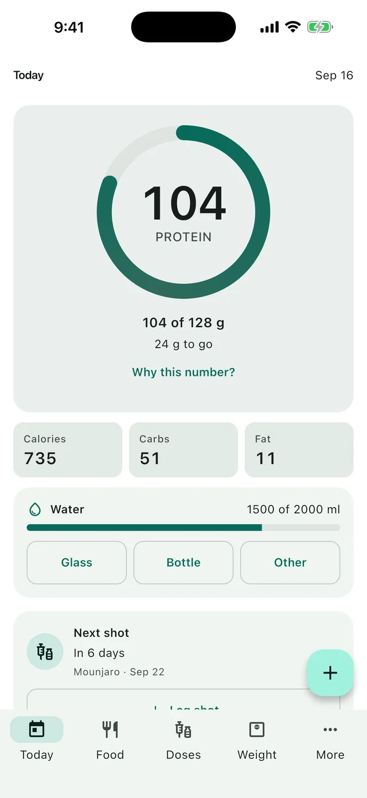
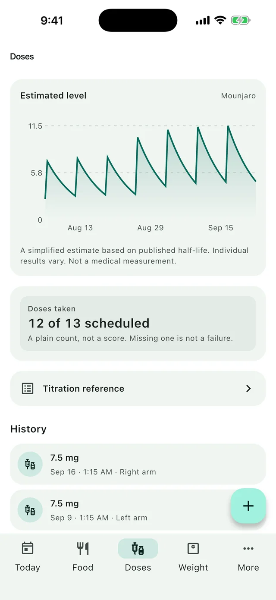

Free to download. Unlimited logging, offline food search and barcode scanning
are free forever. iPhone, iOS 15 and later. 12 languages.

Four things that are unusual about it
A real food database
About 98,000 foods from USDA FoodData Central, plus barcode scanning, all of it inside the
app. The highest-rated GLP-1 app in the category has no food tracking at all, and several of
the ones that do return figures their users say are wrong.
Protein first, not calories
On a GLP-1 you are unlikely to overshoot calories and quite likely to undershoot protein.
The protein ring is the largest thing on the home screen; calories are a small tile
underneath. Why that inversion matters.
Nothing leaves your phone
No account, no server, no analytics receiving a health value. The App Store privacy label
is Data Not Collected, and it is literally true. You can still export everything
whenever you want.
No AI guessing at your record
Food comes from a database, not a model's best guess. Half-lives come from FDA prescribing
information, quoted with the label revision. In a category with a measurable AI backlash, we
would rather be checkable.

Your shots, and what they add up to
Every injection with its dose, date and site, and a suggested site each time based on
wherever you have gone longest without using. An estimated level chart drawn from the
half-life published in the manufacturer's own labelling — free, where the category leader
charges for it.
Adherence is shown as a plain count, never a streak and never a score. Missing a dose is
often a medical decision, and gamifying that would be wrong.
Vials and compounded doses, in the units you actually use
Enter a dose in milligrams or in syringe units and see the other as you type, using the
concentration on your vial. It is a conversion and nothing more — the app never proposes an
amount, never prefills one, and never advances you along a schedule.
A smoothed trend line, so one bad morning is not a story. Water with a two-tap quick add —
the single most requested feature in this whole category. Side effects logged against your dose
history, so a pattern has somewhere to show up.
Apple Health can fill the trend from a connected scale, if you want it. It is optional, off
until you switch it on, and the app works identically without it.
Twenty seconds of the actual app
Real screens from the shipped build, not a mock-up.
Built on 4,313 reviews, not guesses
Before deciding what to build, we read every App Store review of 27 GLP-1 tracking apps and
counted what people actually complain about and ask for. Water tracking, export, and Apple Health
all shipped because of that, not because we thought of them.
Yes. Unlimited logging of shots, food, weight, water and symptoms is free, with no account, along with the full offline food database, barcode scanning, injection site rotation, reminders and the estimated level chart. Premium adds history beyond 90 days, insights, custom macro targets and themes.
Do I need an account?
No, and there is never a login wall. Everything is stored in a database on your phone.
Which medications does it support?
Ozempic, Wegovy, Rybelsus, Mounjaro, Zepbound, Saxenda, Victoza and Trulicity, plus a custom option for compounded or vial medication with dosing in syringe units or milligrams.
Does it work offline?
Yes. The food database — about 98,000 foods — ships inside the app, and barcode lookups check local data first. You can log everything in airplane mode.
Does it send my health data anywhere?
No. Nothing is uploaded and no analytics service receives a health value. The only network request the app makes is a barcode lookup to Open Food Facts, which sends the barcode and nothing else. Its App Store privacy label is Data Not Collected.
Can I get my data out?
Yes. Settings → Export your data produces a full backup file plus a spreadsheet per thing for your doctor, and restore brings your history onto a new phone. The export always contains everything, never just the last 90 days.
Does it tell me what dose to take?
Never. It does not prescribe, recommend or adjust doses, and it cannot assess symptoms. Titration schedules shown in the app are reproductions of the manufacturers' published labelling, for reference. Your prescriber decides your dose.
Free, and free to leave
Logging is free forever with no account. Your history is yours, exportable in two taps, and
stays on your phone until you send it somewhere.